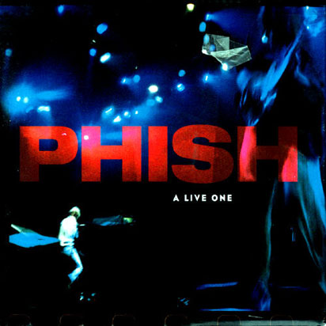
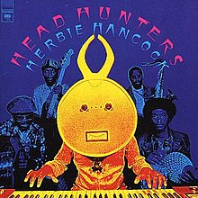
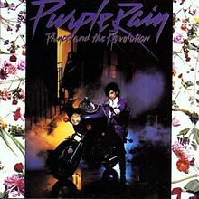
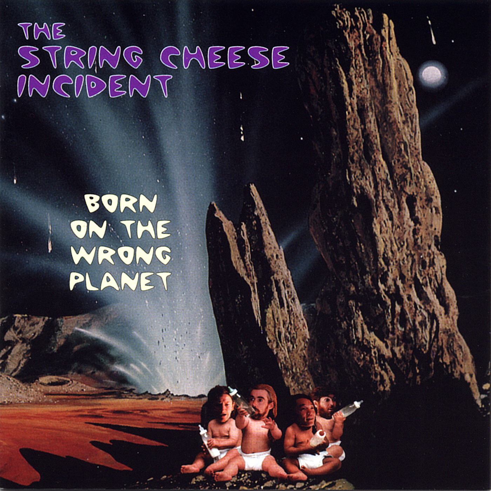
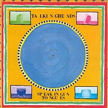
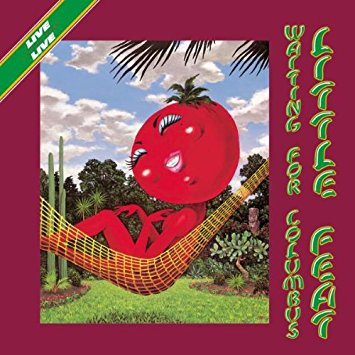

Abbey Road
The Beatles (1969)

A Live One
Phish (1994)

Exodus
Bob Marley (1977)

Head Hunters
Herbie Hancock (1973)
OK Computer
Radiohead (1997)

Purple Rain
Prince (1984)

Born On The Wrong Planet
The String Cheese Incident (1997)

Speaking In Tongues
Talking Heads (1983)

Waiting For Columbus
Little Feat (1978)
Welcome To The Cruel World
Ben Harper (1994)